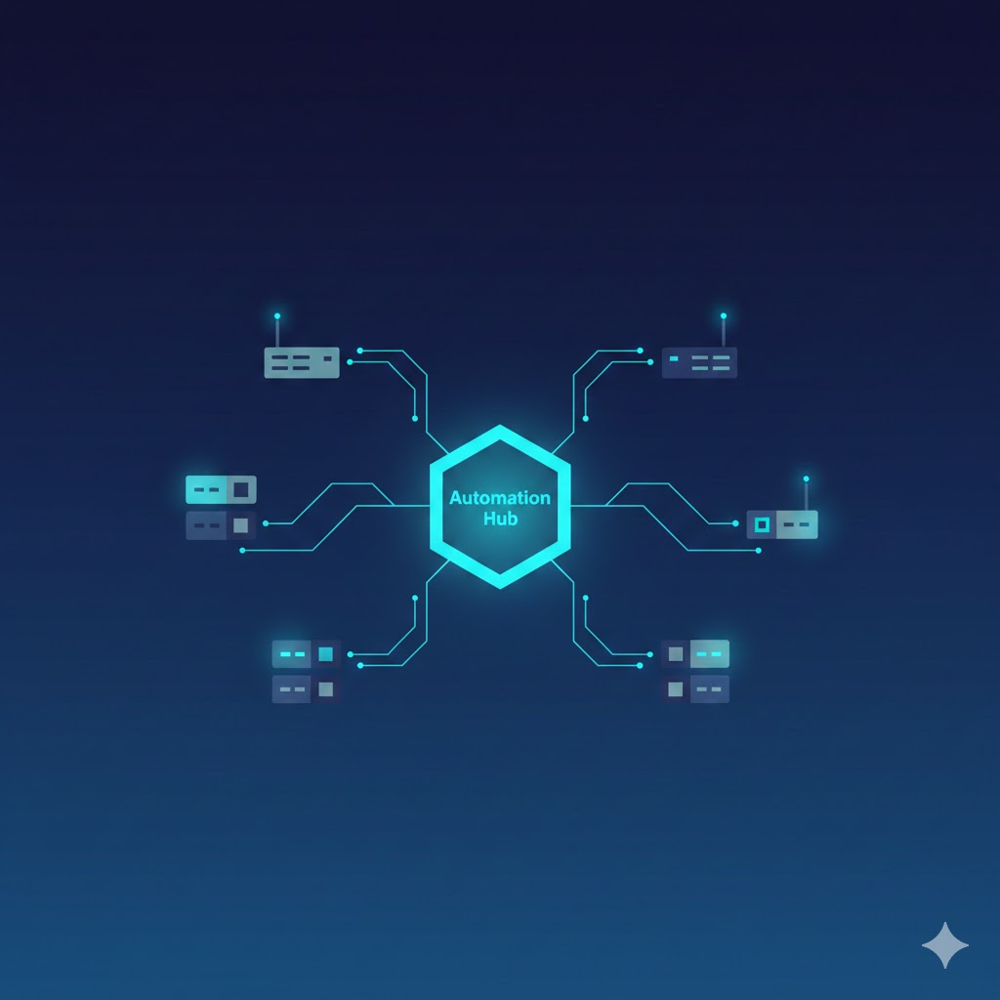

How to Save 20 Hours a Month by Automating SNMP Configuration
Have you ever spent an entire day copy-pasting the same SNMP config to dozens of devices? If so, this article is for you.
The Problem: Manual Configuration is a Time Sink
A typical network engineer spends 4-8 hours per week on manual configuration. This means:
- Logging into each device separately
- Copy-pasting config from a notepad
- Fixing typos (which always happen)
- Documenting changes (if there's time left)
From Reddit r/networking:
"He took my sample config and copied and pasted it into Word for each device." — SubnetZero
The Solution: Automation Without Programming
You don't need to be a programmer to automate. Modern tools allow you to:
- Define the config ONCE
- Select devices from a list
- Preview changes BEFORE deployment
- Deploy to all devices with one click
Real Savings
Example: Changing SNMP community string on 50 devices:
- Manually: 2-3 hours (login, paste, verify × 50)
- With automation: 10 minutes (config template + deploy)
That's 20+ hours monthly you can spend on more interesting projects.